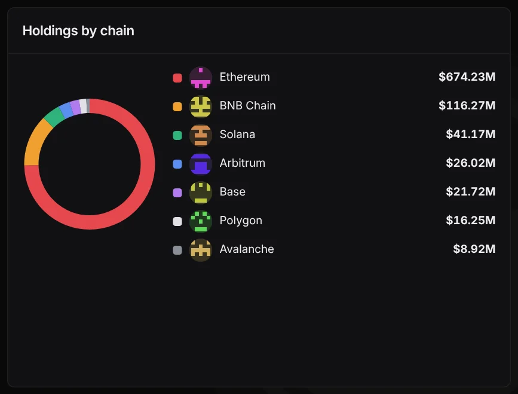

MEXC's tracked wallets shed $166 million before FinCEN's order. Then MX fell 6%
DeepSea's MEXC wallets fell from $1.08 billion to about $918 million between November 5 and early November 6, before FinCEN moved against the exchange. They have barely moved since, and the data does not show why.
Key points
- DeepSea's MEXC page showed $917.93 million in tracked wallets at 12:39 a.m. ET on November 7, 2026, against $1.08 billion at 12:39 a.m. ET on November 5.
- The drop came before FinCEN's November 6 order: DeepSea's exchanges list already showed $918.21 million at about 12:40 a.m. ET on November 6, and about $917 million to $918 million in every reading since.
- MEXC's MX token fell 6.2%, from $1.59 at 3:00 p.m. ET on November 6 to $1.49 at 12:40 a.m. ET on November 7, on CoinGecko.
 What DeepSea's data shows
What DeepSea's data shows
DeepSea's MEXC page showed $917.93 million in wallets it labels as MEXC at 12:39 a.m. ET on November 7, 2026: $754.12 million in tokens and $163.81 million in native coins such as ether. On November 5 at 12:39 a.m. ET, the same page showed $1.08 billion, with $910.72 million in tokens and $173.70 million in native coins.
So token holdings are down about $156.6 million and native coins about $9.9 million. By chain, Ethereum fell from $836.28 million to $674.23 million, while BNB Chain moved only from $119.76 million to $116.27 million. The biggest Ethereum wallets now are MEXC 3 ($350.30 million) and a Safe smart account labeled MEXC 21 ($199.81 million).
Timing matters. DeepSea's exchanges list showed MEXC at $1.09 billion at about 6:36 a.m. ET on November 5 and already at $918.21 million at about 12:40 a.m. ET on November 6, before FinCEN released its order that day. Readings at 6:36 a.m. ET on November 6 ($917.11 million) and 12:35 a.m. ET on November 7 ($917.90 million) show almost no change after the order.
One caution: the 7-day flow numbers on the page ($165.13 million in, $57.57 million out, net plus $107.56 million) are exactly what DeepSea showed on November 5. We treat that figure as not yet updated, so it cannot tell us whether coins left this week.

Data: DeepSea (desea.io), checked November 7, 2026, 12:39 a.m. ET.
What moved, and what we cannot say
The fall happened on November 5, the day of the market sell-off, and not after FinCEN's order. Ether fell about 7% between the two readings on CoinGecko, from about $2,420 to $2,247. That explains only a small part of the gap, because most of MEXC's tracked balance is tokens, not ether. Token balances fell 17%.
Two other things can shrink the number without a single withdrawal: the exchange moving coins to wallets DeepSea does not track, and DeepSea dropping wallets from its list. DeepSea shows 69 MEXC wallets on its exchanges list now, against 73 on November 5 and 75 early on November 6, so the list itself keeps changing. We could not open a block explorer in this run to trace the Ethereum transfers, so we do not know which of these happened. We are not calling it a withdrawal run.
The wider picture is larger. MEXC's own reserve report on CoinMarketCap totals $4.94 billion, close to the roughly $5 billion that FinCEN's order cites, and includes bitcoin wallets that DeepSea's 13-chain view does not cover.
MX token and trading volume
MX, MEXC's exchange token, traded near $1.59 at 3:00 p.m. ET on November 6, the day FinCEN announced its order. It was $1.49 at 12:40 a.m. ET on November 7, down 4.4% over 24 hours and 5.9% over seven days, with a market value of about $136.7 million, per CoinGecko.
CoinGecko put MEXC's 24-hour spot volume at about 12,473 BTC, roughly $948 million, at 12:55 a.m. ET on November 7. We do not have an earlier reading from the same source to compare it with.
MX price, November 6 to 7, 2026
US$
Source: CoinGecko 15-minute price data.

What to watch
The next update of DeepSea's 7-day flow figure, which will show whether money left MEXC's wallets after the order. Explorer traces of the MEXC 3 and MEXC 21 wallets on Ethereum. The Federal Register date for FinCEN's order, which starts its 30-day clock. Our story on the order is here.
LC Insight analysis
This section is our reading of the facts above, not a statement of fact.
- We think the honest reading is that MEXC's tracked balance fell more than prices explain on November 5, a day before the order, and has been flat since. The data in hand cannot tell a withdrawal from a wallet reshuffle. A fresh 7-day flow figure is the test.
- MX's slide was modest next to the headlines. The FinCEN order cuts U.S. payment links; it does not freeze MEXC balances.
- The stale 7-day flow figure is its own warning. Before anyone reads a bank run into an exchange dashboard, check when each number was last updated.
What's next
- DeepSea's next 7-day net flow figure for MEXC
- Transfers out of the MEXC 3 and MEXC 21 wallets on Ethereum
- Federal Register publication of the FinCEN order
- MEXC's next proof of reserves update
Disclaimer. This article is based on public information and the sources listed below as of the update time shown. It is for information only and is not investment, legal or tax advice. Figures may change as companies and authorities publish new data.
Sources
- DeepSea, MEXC exchange page (holdings, chains, 7D flows, largest wallets; read November 7, 2026, 12:39 a.m. ET; earlier reading November 5, 2026, 12:39 a.m. ET)
- DeepSea, exchanges list (MEXC 69 wallets on 13 chains; read November 7, 2026, about 12:35 a.m. ET)
- CoinMarketCap, MEXC exchange page, reserves reported by the exchange (read November 7, 2026, 12:45 a.m. ET)
- CoinGecko, MX Token price and MEXC exchange volume (API, read November 7, 2026, 12:40 a.m. ET)
- CoinGecko, Ethereum (ETH) price (API, November 5 and 7, 2026)
- FinCEN, Order: Imposition of Special Measure Prohibiting the Transmittal of Funds Involving MEXC Global (November 6, 2026)